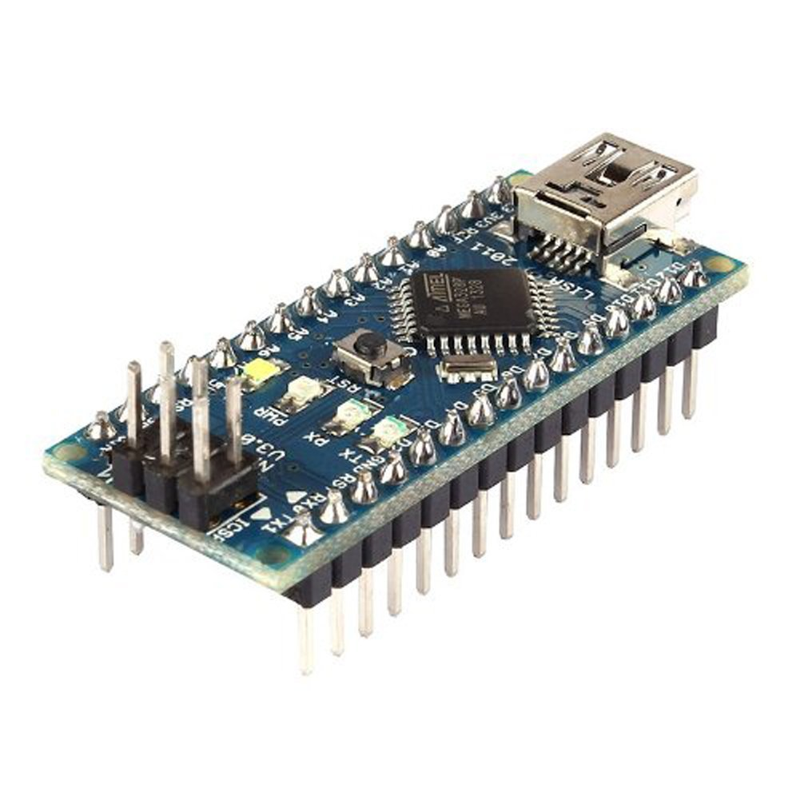
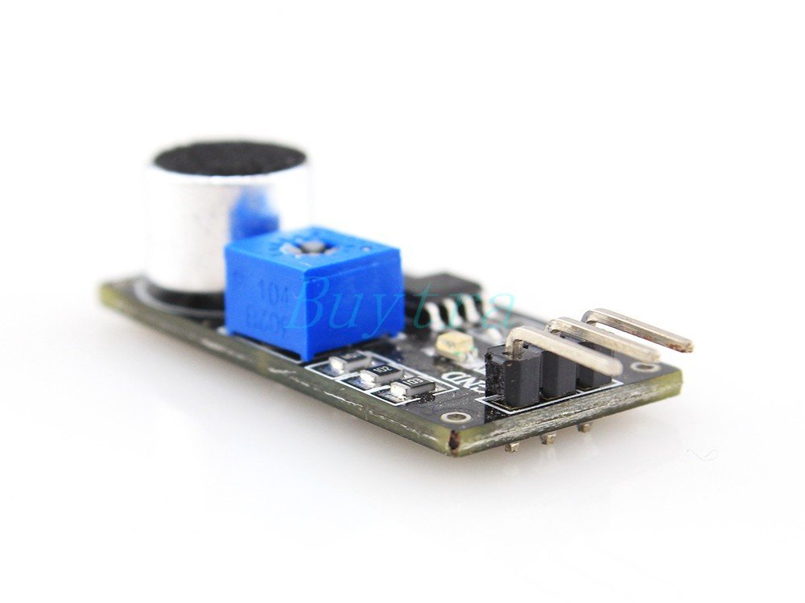
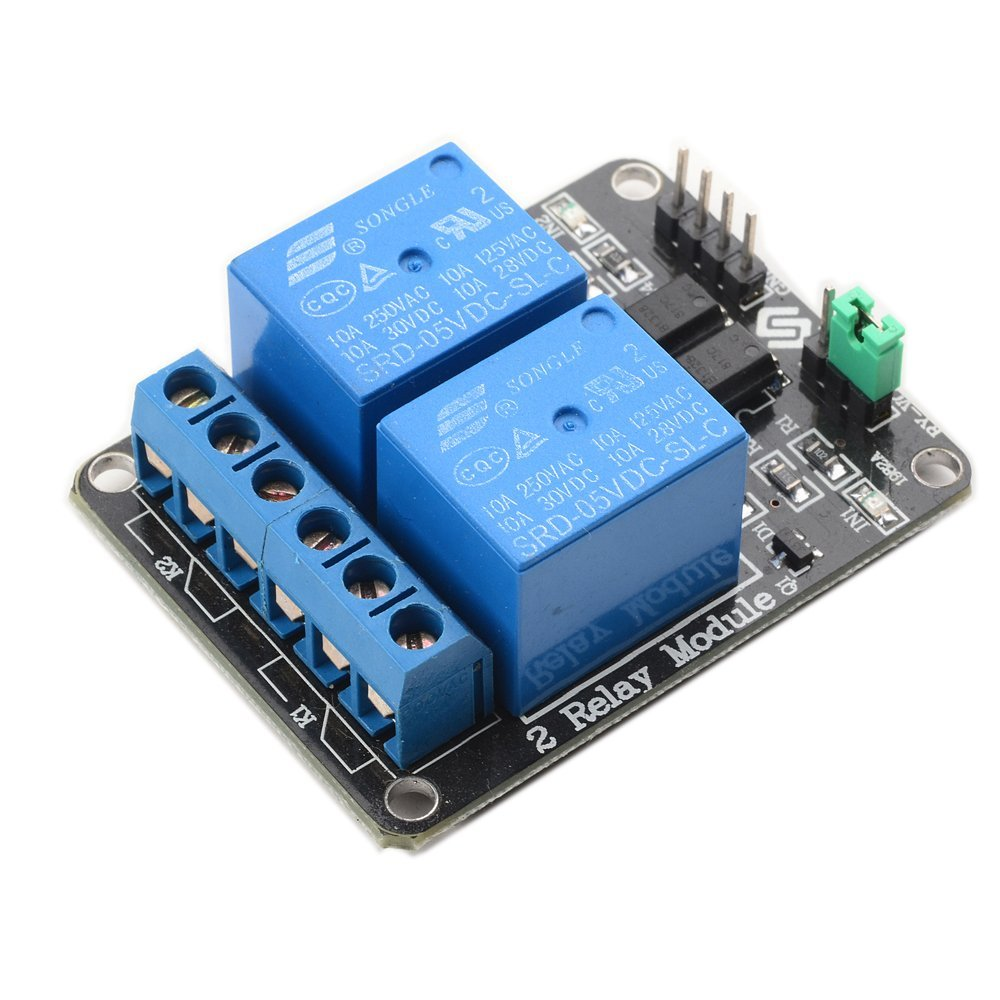
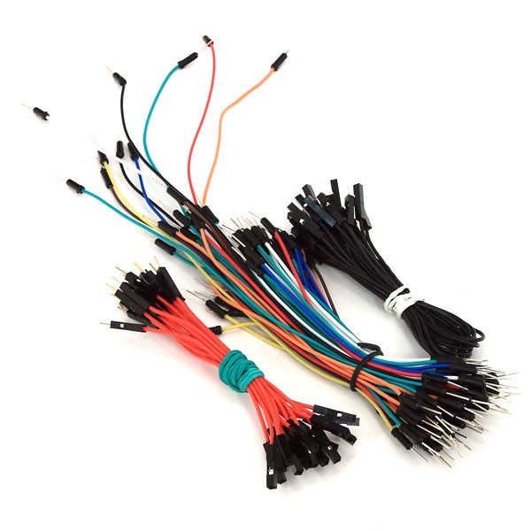

Composants
Liste des composants et du matériel nécessaire à la fabrication d'un clapper
Pour fabriquer votre clapper, il vous faut d'abord une lampe. Prèferez une ancienne lampe car vous allez devoir en partie la démonter, mais il faut qu'elle fonctionne bien sur.
Vous aurez ensuite besoin des composants éléctroniques suivants :

Arduino Nano v 3.0 (ATmega 328)

Arduino Sound Sensor / LM393

Arduino Relay Board

Différents cables (vous pouvez réutiliser d'anciens cables
Vous aurez également besoin de matériel de bricolage :
- Un cutter
- Un fer à souder
- De l'étain (pour les soudures)
- Des tournevis (plat et cruciforme)